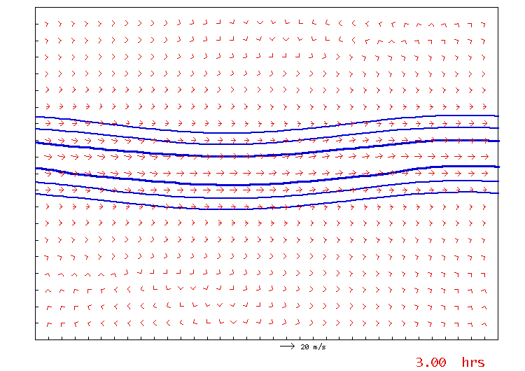
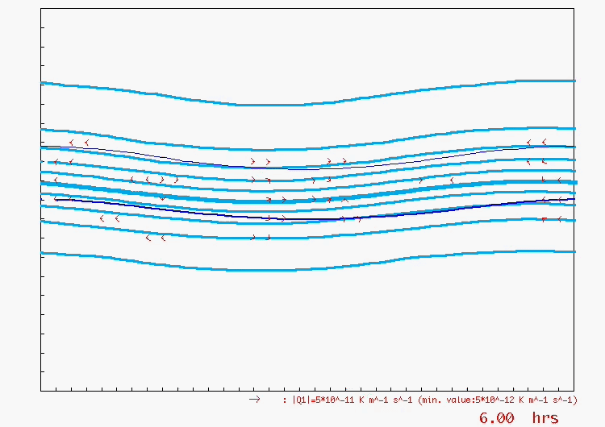

The growth of a baroclinic wave on the f-plane, where an initially small wave-like perturbation in temperature develops into a realistic cyclone with a cold front, warm front, and back-bent front, accompanied by frontogenesis indicated by Q-vectors pointing toward the warm side of the fronts

The evolution of a baroclinic wave on the \(\beta\)-plane with Newtonian heating/cooling, where the system does not return to the initial radiative equilibrium state but instead produces a train of small baroclinic disturbances propagating eastward along the southern flank of a “mother” low, resembling a storm track